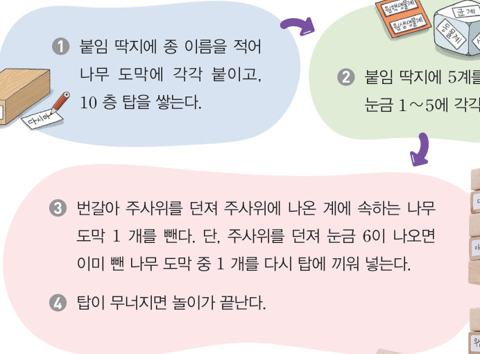
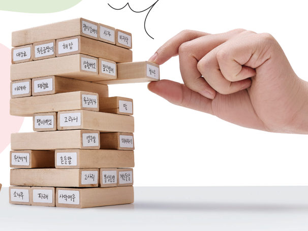
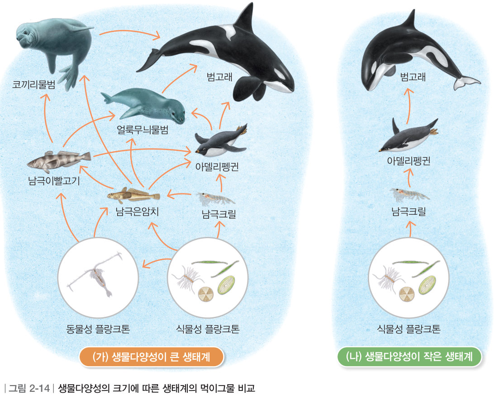
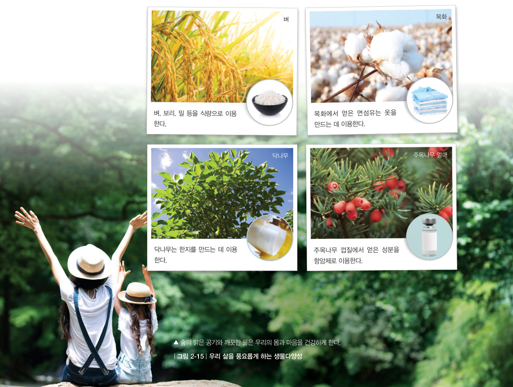
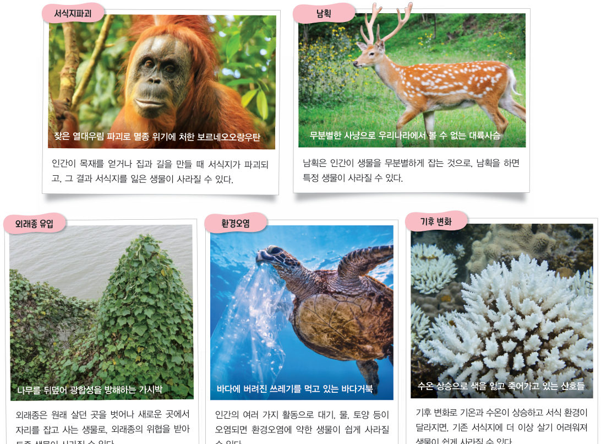

살아있는 교과서 · Ⅱ. 생물의 구성과 다양성 · 3. 생물다양성보전 · 01 65~69쪽
소중한 생물다양성
“다람쥐에게 도토리를 돌려 주세요.” “나는 뭘 먹으라고…….” 열매를 많이 채집하는 것은 숲의 생물다양성에 어떤 영향을 미칠까? 가상 생물 탑 쌓기 놀이와 먹이그물 실험으로 생물다양성을 보전해야 하는 까닭을 알아보자.
🎯 이 단원을 배우면 — 생물다양성의 중요성과 감소 원인을 알고, 생물다양성을 보전해야 하는 까닭을 설명할 수 있다.
단원 열기3. 생물다양성보전 65쪽
오염된 바닷속에서 산호들은 죽어서 색을 잃고, 산호와 함께 살던 생물들도 사라졌어. 이대로라면 근처의 바다도 황폐해질 수 있대. 바다를 지키고 다양한 생물이 다시 돌아올 수 있도록 해야 해.
세 번째 블록
황폐해진 바다에 다시 다양한 생물이 살게 하려면 어떻게 해야 할까?
‘소중한 생물다양성’(66쪽)과 ‘생물다양성보전을 위한 노력’(70쪽)의 블록을 모으면 답할 수 있어요. 🧩
✔이 단원과 관련해 이미 알고 있는 것을 모두 골라 보자.
탐구생물다양성보전 놀이 활동하기 66~67쪽
생물다양성보전은 생태계 유지와 어떤 관계가 있을까?

66쪽놀이 방법

5계 생물 30 종을 적은 나무 도막 탑
가상 놀이생물 탑 쌓기
[🎲 주사위]를 누르면 나온 계의 나무 도막(종) 하나가 빠져요. 6이 나오면 뺀 도막 하나를 다시 끼워 넣어요. 같은 층에서 도막이 많이 빠지면 탑이 무너져요! [다르게 해 보기]처럼 도막 수가 다른 두 탑을 비교해 보자.
1탑이 생태계라면 나무 도막을 빼는 것은 , 다시 넣는 것은 을 뜻한다. 더 오래 무너지지 않는 탑은 이다.
💬협력적 소통 놀이 결과와 관련하여 생물다양성을 보전해야 하는 까닭을 토의해 보자.
교과서생물다양성과 생태계의 안정 67쪽
각각의 나무 도막이 하나의 종이라면 나무 도막을 쌓은 탑은 생태계에 비유할 수 있다. 생태계에서는 다양한 생물이 먹이 관계로 얽혀 서로 영향을 주고받는다. 그림 2-14의 (가)와 같이 생물다양성이 큰 생태계는 먹이그물이 복잡하고, (나)와 같이 생물다양성이 작은 생태계는 먹이그물이 단순하다. 만약 어떤 생물이 사라지면 (가)와 같은 생태계보다 (나)와 같은 생태계가 더 쉽게 파괴된다. 사라진 생물과 먹이 관계에 놓인 생물들이 더 큰 영향을 받기 때문이다. 따라서 생물다양성보전은 생태계를 안정적으로 유지하는 데 중요하다.

그림 2-14(가) 생물다양성이 큰 생태계 · (나) 생물다양성이 작은 생태계
가상 실험먹이그물에서 한 종을 없애면?
생태계를 고르고 생물을 눌러 없애 보자. 먹이가 모두 사라진 생물도 따라서 사라져요(회색). 아델리펭귄을 없애면 범고래는 어떻게 될까? [되살리기]로 처음으로 돌아갈 수 있어요.
생물을 눌러 보세요.
Q아델리펭귄이 사라지면 범고래도 사라지기 쉬운 생태계는 이다.
교과서우리 삶을 풍요롭게 하는 생물다양성 68쪽
생물다양성보전은 우리 삶과 어떤 관계가 있을까?
우리는 생물다양성이 보전된 생태계에서 많은 것을 얻는다. 그림 2-15와 같이 생물에서 얻은 원료로 식량, 섬유, 종이, 의약품 등을 만든다. 또한 생물다양성이 보전된 숲과 같은 자연에서 여가 활동을 하면서 몸과 마음을 건강하게 한다. 이러한 혜택은 경제적으로 따질 수 없을 만큼 가치가 크다. 생물다양성을 보전하는 것은 우리가 얻는 혜택만을 위한 것이 아니다. 모든 생물은 생태계 구성원으로서 지구에서 살아갈 권리가 있고, 각각 소중한 가치를 지닌다. 따라서 생물다양성을 보전하는 것은 그 자체로 중요하다.

그림 2-15벼(식량) · 목화(섬유) · 닥나무(한지) · 주목나무(항암제) · 숲(건강)
벼
목화
닥나무
주목나무
교과서생물다양성이 감소하는 원인 69쪽
오늘날 지구의 생물다양성은 빠르게 감소하고 있다. 생물다양성이 감소하는 원인으로는 그림 2-16과 같이 서식지파괴, 남획, 외래종 유입, 환경오염, 기후 변화 등이 있다. 이는 대부분 인간의 활동과 관련이 있다. 생물다양성이 감소하면 생태계가 쉽게 파괴되므로 인간을 포함한 모든 생물의 삶이 위태로워질 수 있다.

그림 2-16서식지파괴 · 남획 · 외래종 유입 · 환경오염 · 기후 변화
스스로 확인하기66쪽 학습 목표를 달성했는지 확인해 보자 69쪽
1개념 확인 생물다양성이 ( ) 생태계가 안정적으로 유지된다.
2사고력 숲을 관통하는 도로가 건설되면 숲의 생물다양성이 감소할 수 있는 까닭을 설명해 보자.
🧩 세 번째 블록 · 힌트 조각 1 (69쪽)
산호와 함께 살던 생물이 산호가 파괴되자 사라진 것은 생물다양성이 감소하는 원인 중 ( )와/과 관련이 있다. → 다음 조각은 ‘생물다양성보전을 위한 노력’에서!
5분 테스트소중한 생물다양성
1생태계에서는 다양한 생물이 로 얽혀 있어 생물 간 서로 영향을 주고받는다. 생물다양성이 큰 생태계는 먹이그물이 ( )하여 생태계가 안정적으로 잘 유지된다.
2먹이그물 실험의 ‘5분 테스트 (가) 숲’과 ‘(나) 숲’을 보고 옳으면 O, 옳지 않으면 X를 골라 보자.
③ 뒤쥐가 멸종되었을 때 수리부엉이도 함께 멸종될 가능성이 높은 생태계는 (나)이다.
④ 생물다양성이 큰 생태계는 (나)이다.
⑤ 생태계 (나)는 오리가 사라져도 생태계가 안정을 유지한다.
3⑥ ⑴ 벼, 옥수수, 보리 등은 에너지의 원천이 되는 자원이다. ⑵ 버드나무 껍질 속 성분으로 만든 아스피린, 쑥에서 추출한 성분으로 만든 위염 치료제는 자연으로부터 을 얻은 사례이다.
4보기 — ㄱ. 서식지파괴 ㄴ. 남획 ㄷ. 외래종 유입 ㄹ. 환경오염
⑦ 보르네오오랑우탄은 잦은 열대우림 파괴로 멸종 위기에 처했다.
⑧ 인간의 여러 가지 활동으로 물 등이 오염되면 이에 약한 생물이 쉽게 사라질 수 있다.
⑨ 북미 원산의 가시박은 우리나라에 들어와 나무를 뒤덮어 광합성을 방해한다.
⑩ 아프리카코끼리는 사람들이 상아를 얻기 위해 무분별하게 잡아 멸종 위기에 처했다.
스스로 정리하기생물다양성보전의 필요성과 감소 원인 74쪽
1생물다양성보전의 필요성 · 2생물다양성 감소 원인
⑴ 생태계 유지: 생태계는 이/가 클수록 안정적으로 유지된다. ⑵ 삶의 풍요로움: 생물에서 여러 을/를 얻고, 자연에서 건강을 얻는다. ⑶ 생명의 가치: 모든 생물은 생태계 구성원으로서 그 자체로 소중하다. 감소 원인: , 남획, 유입, 환경오염, 기후 변화
제출학생 정보 · 제출하기
모든 활동을 마친 뒤 제출하면 전체가 한 번에 채점되고 피드백이 나타나요. 답안은 선생님 스프레드시트(중1 탭)에 기록돼요.